During my Fall 2023 semester, I had an extra credit assignment
for my Introduction to Computer Systems class that had me find solutions for
a Binary Bomb Puzzle. This led me to gain skills such as debugging an assembly file,
converting assembly commands back into high level language code, and searching registers
for what was written to its memory.
In order to solve this puzzle, I had to solve a series of "Phases"
that would then let me onto the next phase.
The "Binary" file I'm talking about is from the original code that has now been
translated into machine code (assembly) that I must now decode.
I'll attach the original instructions from Carnegie Mellon University:
Bomb Lab
Phase 1
Knowledge of the following commands are necessary to solve the puzzle:
- strings: print all strings in Binary file
- objdump: dump objects' registers and contents to console
- gdb: GNU debugger
- disassemble/disas: the gdb command that lets you see the code's next execution in assembly
- nexti: the gdb command that performs the next execution, "next instruction"
- info registers/i r: the gdb command that shows the register's data, useful for when determining where data is at any point in time in a program
- Also, knowledge on how to set variables to values you want can prove useful for the later phases.
- strings is our objdump
- bomb is our file
- > will declare all outputs from strings bomb into a file called strings.txt
- strings.txt is our output file.
strings bomb > strings.txtWhen we run this command we get about 300 lines of strings from our file.
A list of notable strings can be found: here.
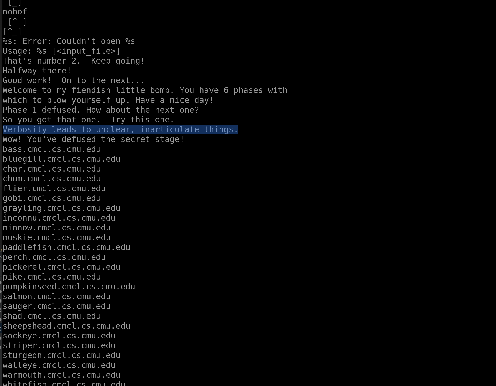
There are a couple of lines which seem to be phrases we output to the user when we run the bomb program. Under the main phrases of the string dump, lots of internal variables, probably used to code the original file. The list of CMU Fish that appear after the main Strings appear to be a list of computers at Carnegie Mellon University and have no reference to our solution, see "Fish Machines"
Besides these things, I also see a reference to a "secret phase" with a reference to "fun7" or, function #7, which are probably related since we are only told about 6 phases to begin with.
Okay, now that we have our strings, lets do the same for our assembly code. With this info we can see how the Strings and original file talk.
objdump -d bomb > bomb.asmThis will dump our assembly code into a new file, where we can then read what the program does upon success for each of the stages. Think of it as a map for the program. This map is not easy to read, though. As some places have many loops within that can be hard to follow.
Luckily for us, the assembly code has identifiers for the different phases and functions.
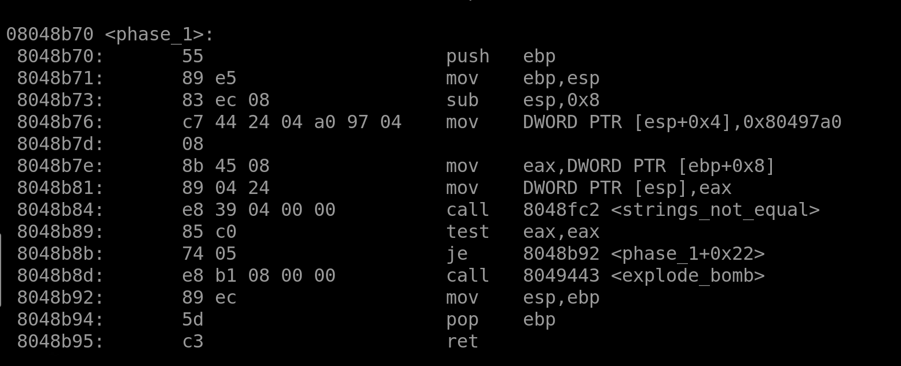
Immediately, we can see that a String gets passed into a register "DWORD PTR" and then is checked against an existing register. If the Strings do not match, explode the bomb.
Now, we don't want to explode the bomb, so we will create a breakpoint using GDB and follow the code as it moves through each assembly command using
disas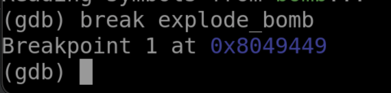
Now, at this point I don't know for sure if the phrase we picked earlier is correct, so my breakpoint will save me from explosion.
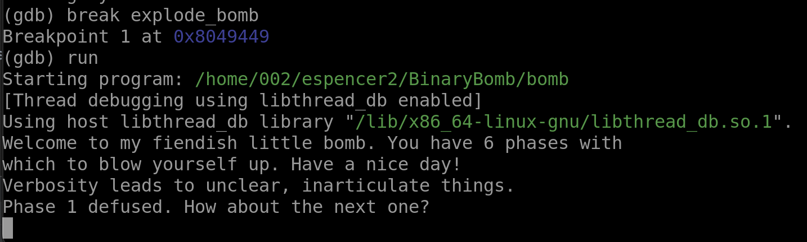
Great! We have the answer to our first phase.
In order to not have to keep entering that in, I will create an "answers.txt" file that I can directly run in GDB.
echo "Verbosity leads to unclear, inarticulate things." >> answers.txt
run answers.txtPhase 2
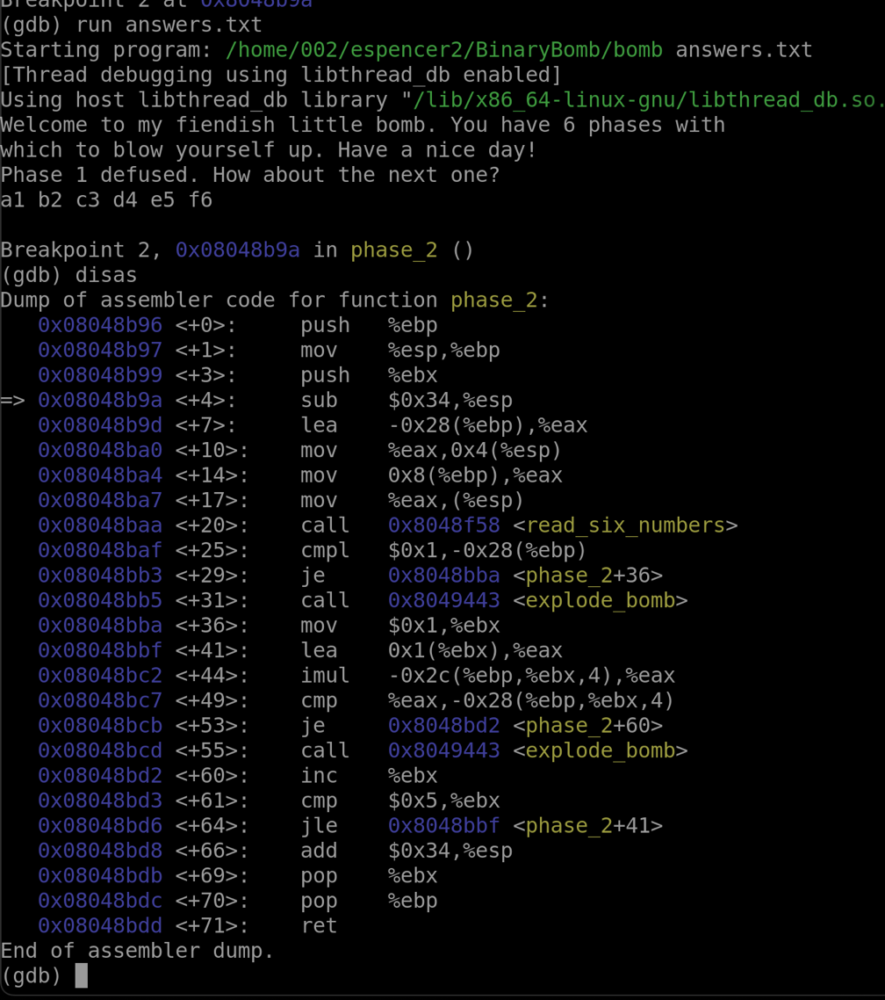
Now, let's look at our read_six_numbers function to see what it does. We know that "cmpl" will compare 1 (denoted with $1 for a constant term) with our input (denoted with -0x28(%ebp) after it has been run through the read_six_numbers function.
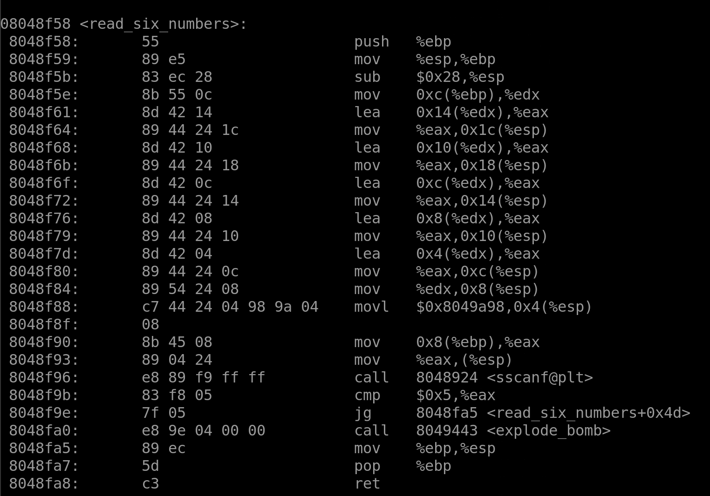
Just confirming. It seems like the function does what it says it does.
Now, when we have 6 variables in the input, we will not auto fail. If we don't have exactly 6 variables, we jump to the explode_bomb function.
On lines +36 through +64 we have a loop, you can tell because we have an increment (%ebx) and a jle command on lines +60 and +64. On line +44, we mutate our first variable by adding %ebx * 4 to our value in the %eax register. Then on the next line +49, we compare that value %eax with the %ebx * 4 value. If these are equal, we jump and increment to the next variable we entered. Once we have 6 successful runs, we will finish the Phase 2 function.
For this function, the answer is that we are actually doing a function for a factorial number. When we multiply the number we have with that one previously, we are essentially doing a factorial. Our six numbers, then, are a list of factorials that are next to each other, but since we start at 1, we must start with 1 factorial. Our answer is 1! 2! 3! 4! 5! 6! or 1 2 6 24 120 720.
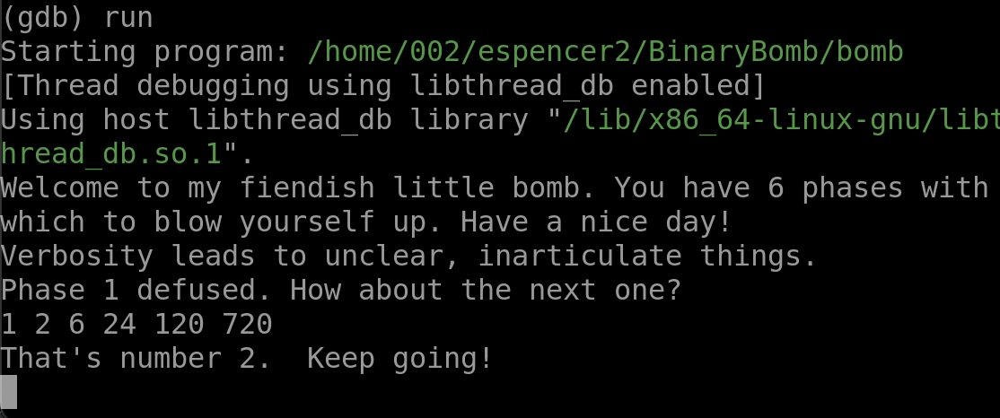
Phase 3
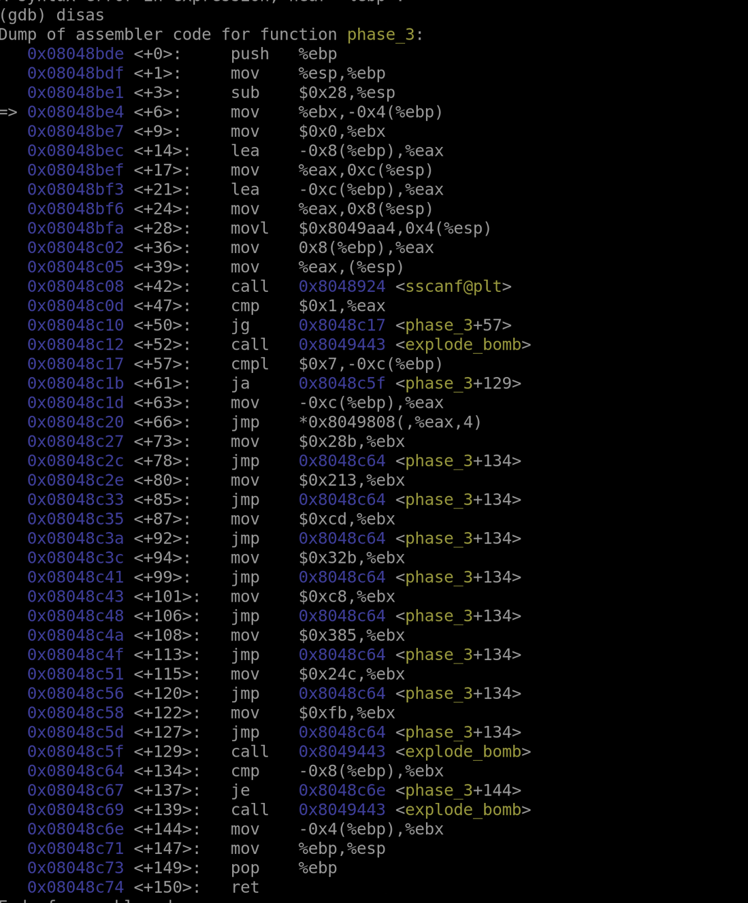
Whew, it only gets harder from here on out.
Reading the string txt we know that the function expects the input "%d %d" which means two integers. The sscanf@plt function scans the first integer to make sure it is greater than the constant $1. In other words, our first integer must be 2 or greater.
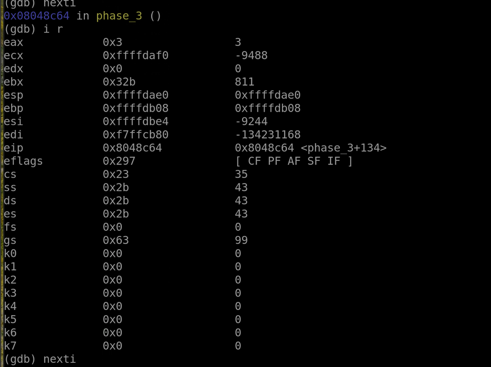
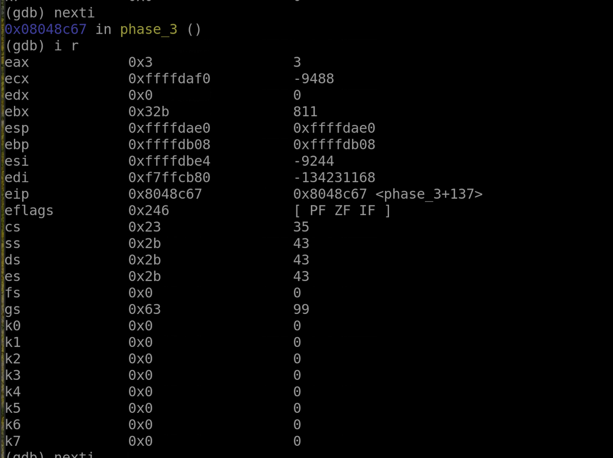
Using nexti and i r to sift through the registers we can find what's inside the register we need right before the final comparison. We can see that the %ebx register holds 811 as its value, so that is our answer. This solution works because to compare something with something else, the program needs one side's "lock" to verify the "key" fits.
If you're interested in this type of hacking, see "side-channel attacks" on Wikipedia.
Phase 4
Phase 5
Phase 6
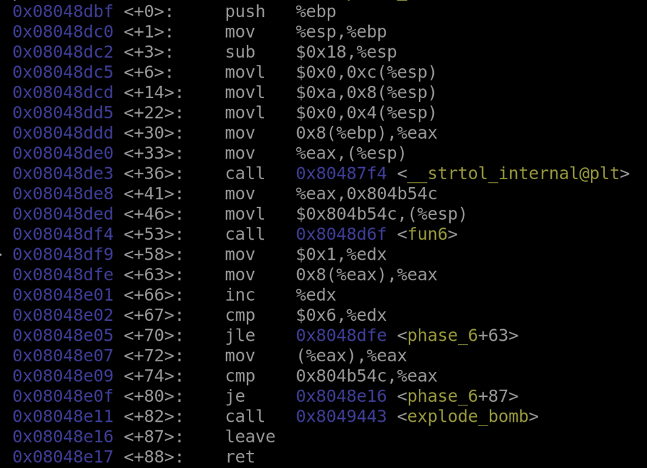
The 6th phase has three functions, one "main" function, a scrambling function, and a function that converts a String to a Long Integer.
The main function is above. Below is the scrambler function.
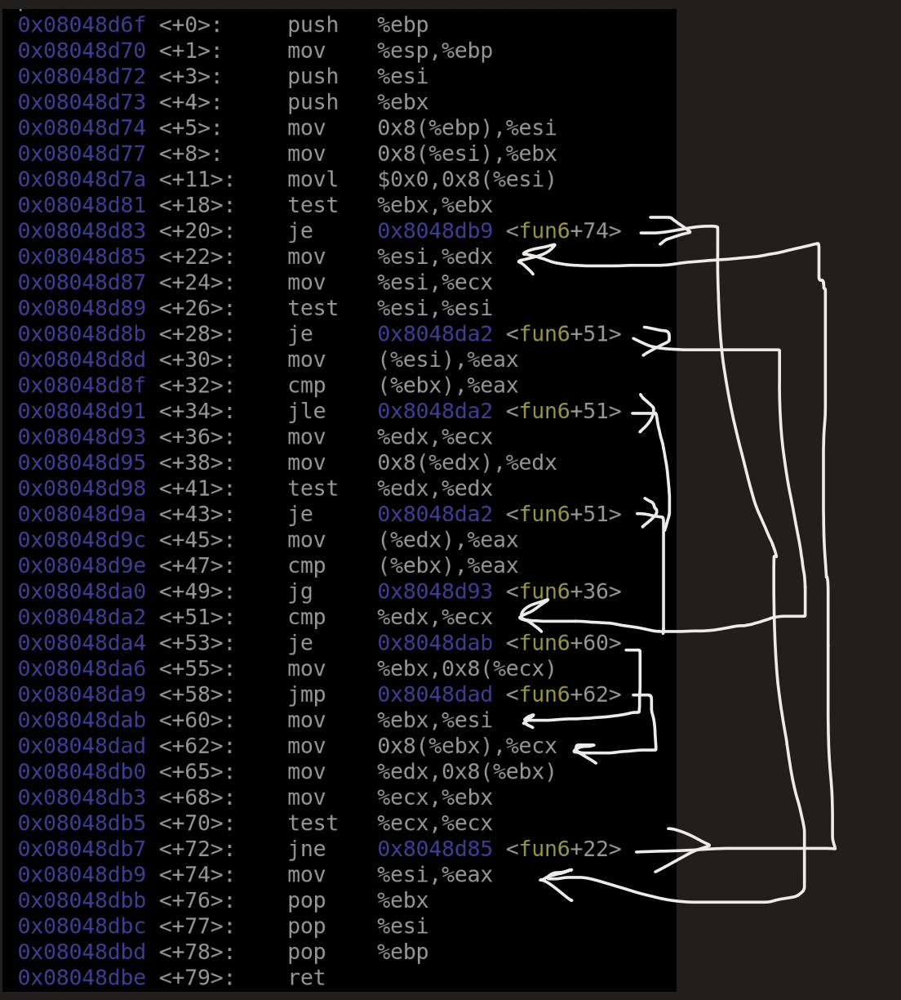 As you can see, this one has many, many, many abstractions and variables to keep track of. What i've concluded is that there are 6 numbers to enter, then that string will be converted into a long int. After that long int is compared and mish mashed through the entire function, if its correct then we get to move onto the next phase.
I've theorized that the puzzle takes 6 numbers 1 through 6 ie "1 2 3 4 5 6" and it's up to you to find the right permutation of these numbers. Without knowing how the function works, there are 720 possibilities. I got through about 45% of them before I gave up.
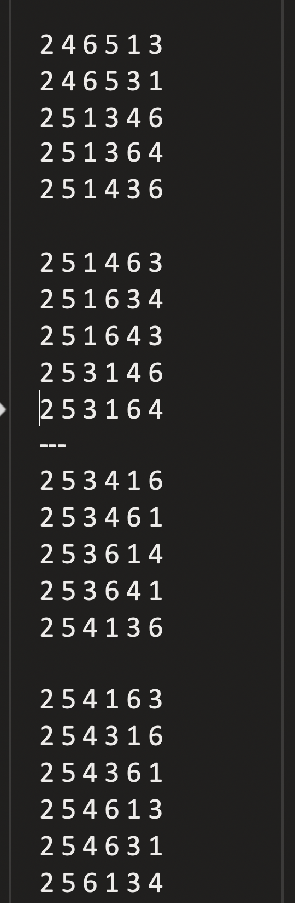
There's probably some simple solution I'm not seeing, if you see something I don't then please shoot me an email.
Secret Phase
Answers
- Verbosity leads to unclear, inarticulate things.
- 1 2 6 24 120 720
- 3 811
- 15
- 55 93
Go back to Main Page
Last updated: